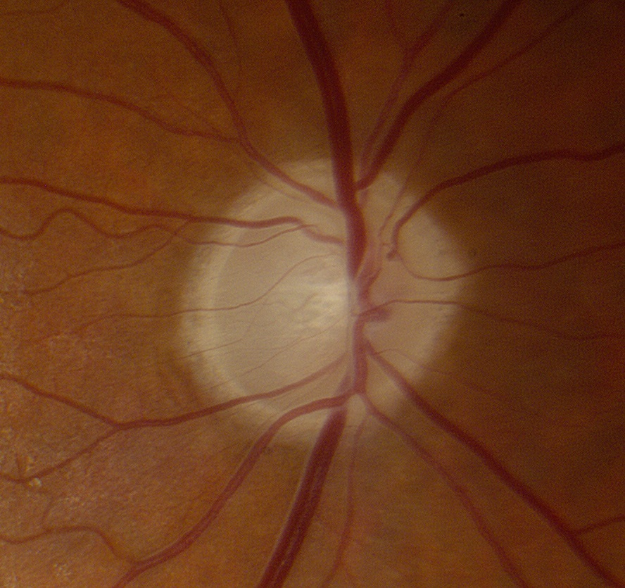

Distinguish pathologic excavation of the optic disc from a large physiologic optic disc cup
Perform visual field examination
Should be normal in large physiologic cupping
Should show nerve fiber bundle defects in pathologic cupping, especially if advanced
Document the optic disc appearance by photography and/or optical coherence tomography
Schedule serial examinations to detect any increase in optic disc excavation or visual field loss

Trap:
optic disc excavation caused by arteritic ischemic or compressive optic neuropathies (“non-glaucomatous cupping”) may resemble that caused by glaucoma, especially if the optic discs began with large cup-to-disc ratios
Overlooking glaucoma may lead to avoidable blindness
Trap:
misdiagnosis of a myopic tilt or optic disc coloboma as glaucoma leads to fruitless treatment with intraocular pressure-lowering agents
Trap:
misdiagnosis of “non-glaucomatous cupping” as glaucoma leads to delayed diagnosis of potentially vision-threatening or life-threatening optic neuropathies